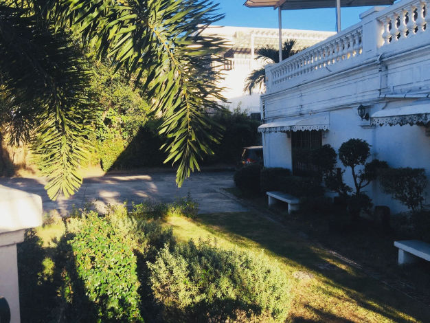

Located at Paseo del Congreso, Plaza Rizal Malolos Bulacan, Casa Real Shrine served as the National Museum and the National Printing Press during the First Philippine Republic. It is a government museum consisting of relics from the First Philippine Republic. Memorabilia's of Gen. Emilio Aguinaldo are also found here. First class families of Malolos, their furnitures, old books, stamps, paper money and coin are also displayed in the Shrine.
Casa Real is also one of Malolos oldest structure. The building contains exhibits, printing press of the Malolos Republic and a display of the 21 Women of Malolos memorabilia. Also presented here are the photographs of the 100 Filipino women. Each of them has distinct characteristics in their fields.

One can feel the heart and soul of the country in Bulacan where the place is truly a hodgepodge of the past and the present, old and new, countryside and urbane. The land is renowned as the land of heroes and for creating great art works in jewelry, leather craft and garments.
Dubbed as the "Northern Gateway from Manila," there are a number of buses plying the main Metro Manila highway – EDSA – that go to Bulacan via the North Luzon Expressway (NLEX).